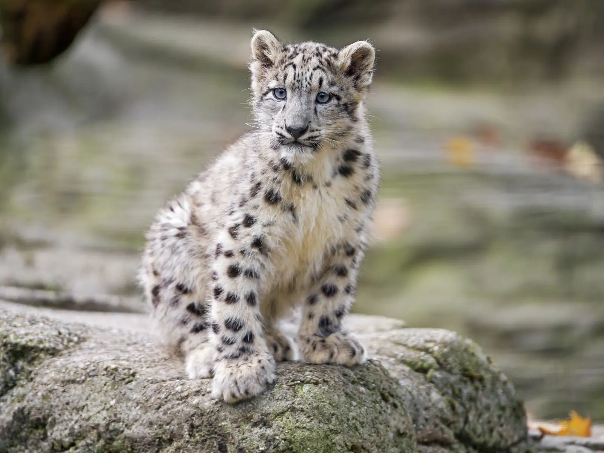

Зовнішній вигляд
Снігови́й барс, і́рбіс, барс (Panthera uncia ) — вид ссавців з родини котових.
Особливості будови
- Він не може ревти, попри неповне окостеніння під'язикової кістки, що, як думали раніше, є принциповим для здатності великих котів ревти.
- Сніговий барс відомий через гарне хутро білувато-рудувато-коричневого кольору з плямами темного, попелясто-коричневого і чорного кольору.
- Хвіст — важкий і пухнастий, основа лап — також вкрита хутром для захисту від снігу та холоду.
